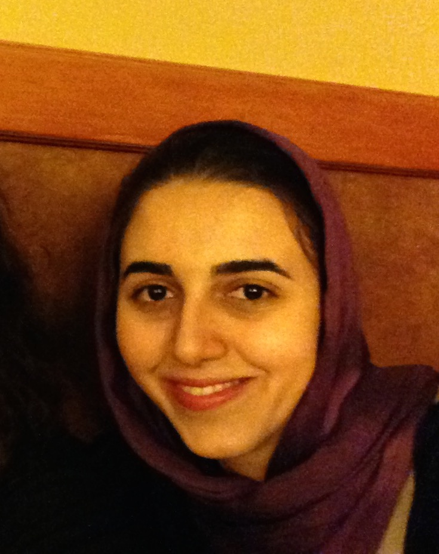

Hedyeh Beyhaghi

Toyota Technological Institute at Chicago (TTIC)
6045 S. Kenwood Ave.
Chicago, IL 60637
I am a postdoctoral researcher at Toyota Technological Institute at Chicago (TTIC) and Northwestern University, where I am hosted by Avrim Blum, Jason Hartline, and Samir Khuller. My research area is Theoretical Computer Science and my main research focus is Algorithmic Game Theory and Mechanism Design.
Prior to joining TTIC and Northwestern, I finished my PhD in Computer Science at Cornell University, where I was advised by Eva Tardos. During my PhD studies, I was a long-term visitor at the Simons Institute for theory of computing, in Fall 2015 for a semester on Economics and Computation, an intern at Google during summer 2017, and an Ivy-Plus Exchange Scholar at Princeton University hosted by Matt Weinberg, 2017-2019. Prior to that, I received my BS degree in Computer Engineering from Sharif University of Technology.
Publications
- Formal Barriers to Simple Algorithms for the Matroid Secretary Problem
with Maryam Bahrani, Sahil Singla, Matt Weinberg, WINE 2021.
- The Strategic Perceptron [arXiv]
with Saba Ahmadi, Avrim Blum, Keziah Naggita, EC 2021.
- Randomness and Fairness in Two-Sided Matching with Limited Interviews[PDF]
with Eva Tardos, ITCS 2021.
- Improved Revenue Bounds for Posted-Price and Second-Price Mechanisms [arXiv]
with Negin Golrezaei, Renato Paes Leme, Martin Pal, Balu Sivan, Operations Research, 2021, forthcoming.
- Optimal (and Benchmark-Optimal) Competition Complexity for Additive Buyers over Independent Items [arXiv]
with Matt Weinberg, STOC 2019.
- Pandora's Problem with Nonobligatory Inspection [arXiv]
with Robert Kleinberg, EC 2019.
- Effect of Selfish Choices in Deferred Acceptance with Short Lists [arXiv]
with Eva Tardos and Daniela Saban, MATCH-UP 2017.
- Effect of Strategic Grading and Early Offers in Matching Markets [arXiv]
with Eva Tardos and Nishanth Dikkala, SAGT 2015.
-
Naturality of Network Creation Games, Measurement and Analysis
with Zahra Fahmi, Mohammad Amin Fazli, Jafar Habibi, Pooya Jalaly and Mohammad Ali Safari, ASONAM 2012.